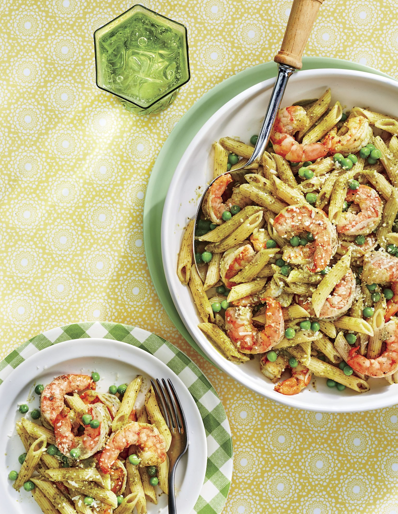

Creamy Pesto-and-Shrimp Penne with Peas
Ingredients
- 12 ounces uncooked penne
- 1 pound medium-sized peeled, deveined, raw shrimp
- 1 cup frozen sweet peas
- 7 ounces refrigerated basil pesto
- 1/4 teaspoon kosher salt
- 1/4 teaspoon black pepper
- 1 ounce Parmesan cheese, shaved ~ about 1/2 cup
Directions
- Prepare pasta according to package directions in a pot of salted
boiling water, adding shrimp and peas to water during final 2 minutes
of cook time. Drain pasta mixture, reserving 1/2 cup cooking water
in a small heatproof bowl. Return pasta mixture to pot.
- Add pesto, salt, and pepper to pasta mixture; stir to combine.
Stir in reserved cooking water as needed, 1/4 cup at a time, until
desired consistency is reached. Transfer pasta mixture to a serving
bowl; sprinkle with Parmesan. Serve immediately.
Check out the original recipe for more details!
Contact Me!
Email Me!
The University of Montana
32 Campus Dr
Missoula, MT 59812
